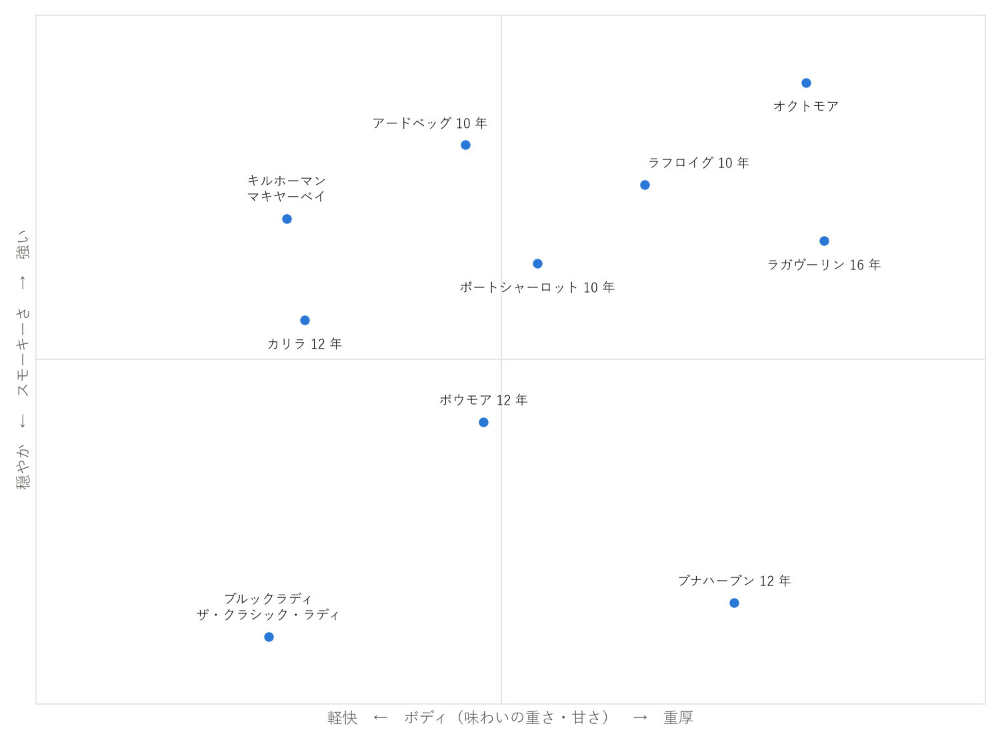

第 9 章 香味の特徴とテイスティング
本章では、アイラウイスキーの香りや味を表す言葉と、それを味わうためのテイスティングの方法を説明する。言葉を知っておくと、自分が何を感じているのかを整理しやすくなり、好みの一本を探す手がかりにもなる。
アイラを表す香味の言葉
アイラウイスキーの香味は、表 14のような言葉で表されることが多い。
言葉 |
たとえられるもの |
主な由来 |
|---|---|---|
焚き火、燻製、炭、たばこ |
ピートの煙（第 5 章 ピートとスモーキーさ） |
|
湿った土、腐葉土、草 |
ピートそのものの香り |
|
消毒薬、正露丸、病院、絆創膏 |
ピートの煙に含まれるフェノール類 |
|
ヨード |
ヨードチンキ、うがい薬 |
フェノール類とする説が有力（第 5 章 ピートとスモーキーさ） |
潮・海藻 |
潮風、海藻、牡蠣の殻 |
諸説ある（第 5 章 ピートとスモーキーさ） |
タール |
アスファルト、ゴム、焦げた木 |
ピートの煙、樽の内側の焦げ |
果実 |
柑橘、洋なし、トロピカルフルーツ |
発酵、蒸留、熟成 |
バニラ・はちみつ |
バニラ、はちみつ、カスタード |
バーボン樽 |
ドライフルーツ |
干しぶどう、イチジク、チョコレート |
シェリー樽 |
スモーキーさばかりに目が行きがちだが、アイラウイスキーの多くは、煙の奥に果実や甘さを持っている。煙の香りと甘い香りの組み合わせ方が、蒸留所ごとの個性になっている。
香味マップ
主な製品の香味の傾向を、「スモーキーさ」と「ボディ（味わいの重さ・甘さ）」の 2 つの軸で整理すると、図 8のようになる。


図 8 主な製品の香味の傾向（一般に言われる傾向を基にした目安）
この図は一般に言われる傾向を基にした目安であり、感じ方には個人差がある。製品を選ぶときの大まかな地図として使ってほしい（第 11 章 選び方）。
グラスの選び方
ウイスキーの香りをよく感じるには、グラスが重要である。テイスティングには、表 15のような、口がすぼまったグラスが向いている。
グラス |
特徴 |
|---|---|
テイスティンググラス |
脚の付いたチューリップ型のグラス。口がすぼまっていて香りが集まる。ワイングラスで代用してもよい。 |
グレンケアングラス |
脚のない短いチューリップ型のグラス。安定していて扱いやすく、蒸留所や専門のバーでよく使われる。 |
ロックグラス |
口の広い背の低いグラス。氷を入れて飲むのに向くが、香りは広がって逃げやすい。 |
アイラウイスキーは香りが強いので、口のすぼまったグラスでは煙の香りが強く集まりすぎることがある。香りのとり方は、次の手順で説明する。
テイスティングの手順
テイスティングは、次の手順で行う。量は 1 回に 10〜20 ml 程度で十分である。必ずチェイサー（水）を用意する。
色を見る：グラスを白い紙の前にかざし、色を見る。色の濃さは、熟成年数や樽の種類の手がかりになる。ただし、色を整えるためにカラメル色素を加えている製品もある（第 11 章 選び方）。
香りをとる：最初はグラスを鼻から少し離し、軽く香りをとる。アルコールの刺激に慣れてから、少しずつ近づける。グラスを軽く回すと香りが立つ。
少量を口に含む：ごく少量を口に含み、舌全体に広げる。甘さ・塩気・苦味・口当たりの重さを感じる。
余韻を感じる：飲み込んだ後に残る香りや味（余韻）を感じる。アイラウイスキーは、煙の香りが長く残ることが多い。
水を加える：数滴の水を加えて、もう一度香りと味を確かめる。香りが開き、甘さや果実の香りが感じやすくなることが多い（第 10 章 飲み方）。
アイラウイスキーは、最初のひと口で煙の強さに驚くことが多い。最初のひと口で判断せず、2 口目、3 口目と味わううちに、煙の奥にある甘さや果実の香りが見えてくる。
記録の付け方
飲んだウイスキーを記録しておくと、自分の好みが分かってくる。記録する項目の例を表 16に示す。
項目 |
記入の例 |
|---|---|
製品名 |
ボウモア 12 年 |
日付・場所 |
2026 年 11 月 8 日、自宅 |
飲み方 |
ストレート、その後に数滴の加水 |
香り |
穏やかな煙、はちみつ、レモン |
味 |
甘さが中心で、後からほろ苦さ。口当たりは軽い。 |
余韻 |
中程度の長さ。煙が穏やかに残る。 |
評価・感想 |
スモーキーさがちょうどよい。次は 15 年と比べたい。 |
うまく言葉にできなくても構わない。「好き」「強すぎる」「甘い」といった素直な印象を残すだけでも、好みの傾向が見えてくる。